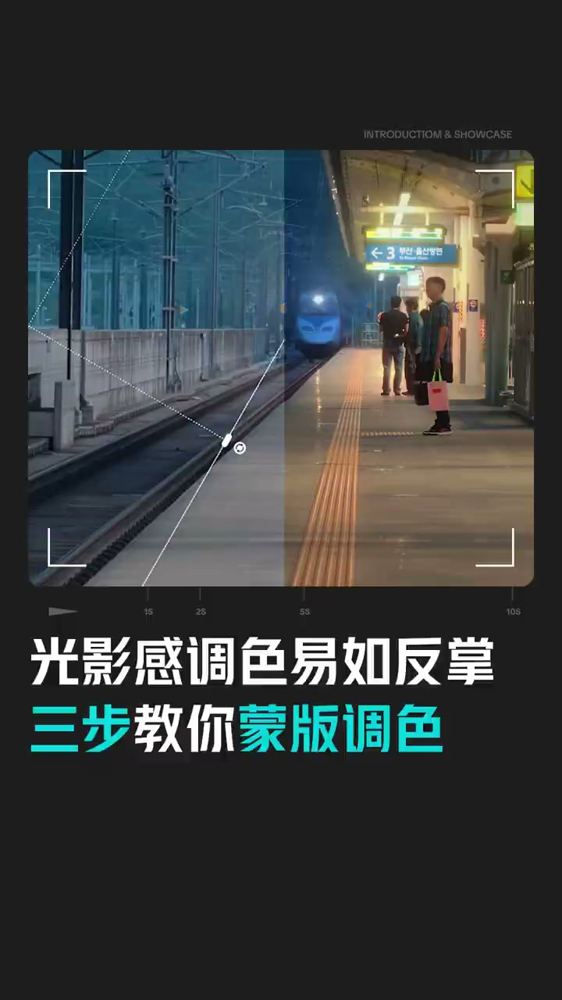
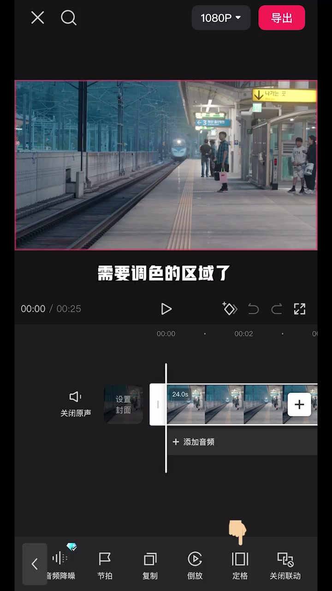

内容要点
这段视频围绕「只需三步，实现最近超火的蒙版光影感调色」展开，按时间介绍其中的关键环节。只需三步,将以实现最近超火的萌板光影感调色。
开场与主题引入
只需三步,将以实现最近超火的萌板光影感调色。首先添加视频到简硬,在调色之前,我们需要先分析画面的光影关系。以这个视频为例,画面左右存在很明显的冷暖和明暗对比。所以我们就要去着重加强这些区域的光影对比。第二步,我们就可以利用萌板来圈出需要调色的区域了。先复制视频,转化中画,并对其主轨。然后在萌板里选择一个合适的形状,圈出需要单独调色的区域。这里以左边为例,为了让每个区域之间过度自然,可以适当带点语化。最后第三步进入调节,对这个萌板区域单独调色

[00:00] 开场与主题引入相关画面。
Opening and theme-introduction footage.
开场与主题引入
根据开头分析,我们要让左半部分的色调更冷,画面更暗。那么就调整与之相对应的参数即可。同理,再复制一段,用萌板圈出右边区域,再通过调色。让右边画面的色调更暖,画面更亮,将所有萌板区域都调好色之后。再给视频分别添加一个梦幻灰光和暗角特效来增加电影感就完成了。看看效果吧

[00:35] 开场与主题引入相关画面。
Opening and theme-introduction footage.
总结
根据开头分析,我们要让左半部分的色调更冷,画面更暗。